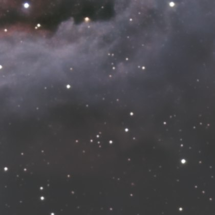
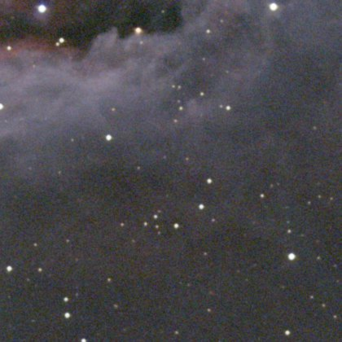

Image linéaire
Outil Denoise
Réduit le bruit tant que l'image est linéaire.
ExpérimentalCOSMODenoise, le réseau maison de cet outil, est expérimental et déconseillé pour une image finale : des défauts subsistent sur certaines images. L'outil peut aussi tourner avec RC-Astro NoiseXTerminator, depuis votre propre installation sous licence.
Comment s'en servir
- Choisir l'étape dans la séquence, ou ajouter l'outil depuis Tools.
- Le régler, puis Preview : l'étape est calculée sans être appliquée.
- Apply garde le résultat ; sinon changer les réglages et relancer Preview.
Réglages
- Amount
- Mélange l'image débruitée et l'original. Instantané : le modèle n'est pas relancé.
Quand s'en servir
Sur l'image linéaire, après Sharpen et avant l'étirement, qui amplifierait le bruit.
Image
Fait pour une image linéaire ; utilisable sur une image étirée.
Exemple


sansavec Denoise